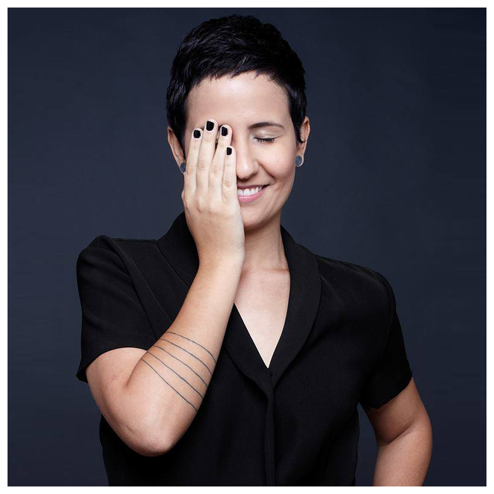

SAMBA - Semana de Produção Multimídia
☰MAÍRA MIRANDA
Tema
Do conteúdo à forma: metodologia criativa no design editorial — ou muito além de "fazer caber"
O bate-papo propõe abordar os tópicos relevantes – práticos e conceituais – na criação e edição de uma publicação editorial, sob o ponto de vista e metodologia do design. Tem por objetivo final destacar a importância do trabalho em conjunto entre jornalistas e designers, prezando pelo conteúdo e pela forma. Por consequência, serão abordados também os elementos básicos de um projeto gráfico.
Maíra Miranda Graduada em Design Gráfico pela Universidade do Estado de Minas Gerais, trabalha há 10 anos no segmento editorial. Começou sua carreira com direção de arte na Revista Ragga e no caderno Ragga Drops, ambas publicações do núcleo jovem do Jornal Estado de Minas. Em São Paulo, fez o Curso Abril de Jornalismo 2009 e trabalhou com edição de arte nas revistas CLAUDIA, ALFA e PLAYBOY. Após a saída do título PLAYBOY da Editora Abril, foi responsável pela transição para a nova editora, bem como pelo reposicionamento de marca e a autoria dos novos projetos editorial e gráfico. Atualmente, é diretora de arte do MECAJournal, publicação mensal da plataforma MECALove.